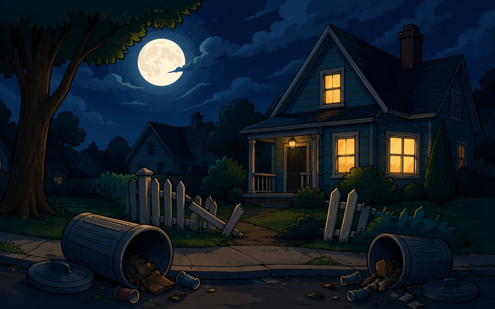
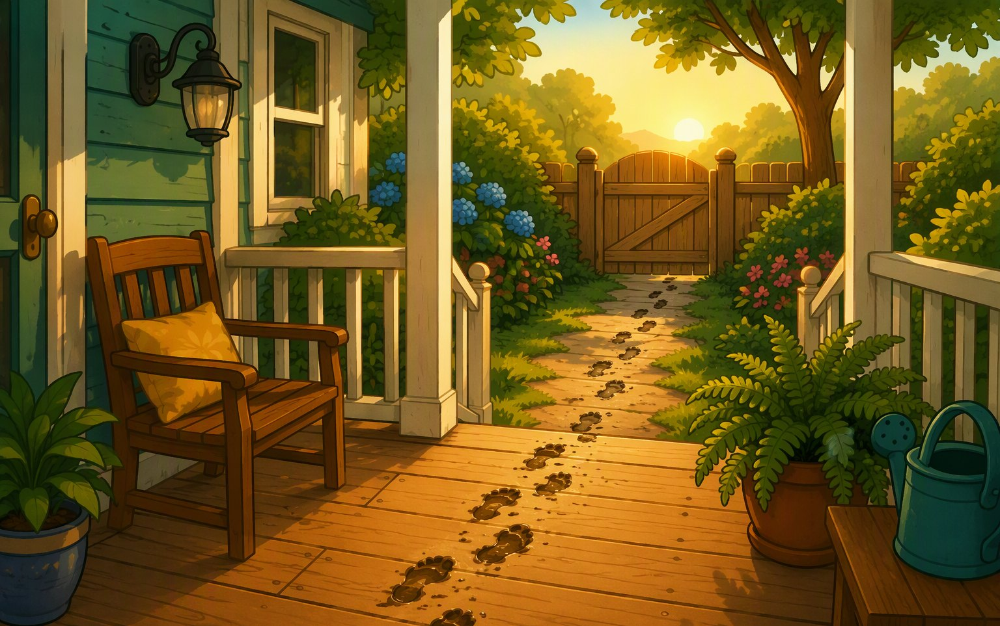
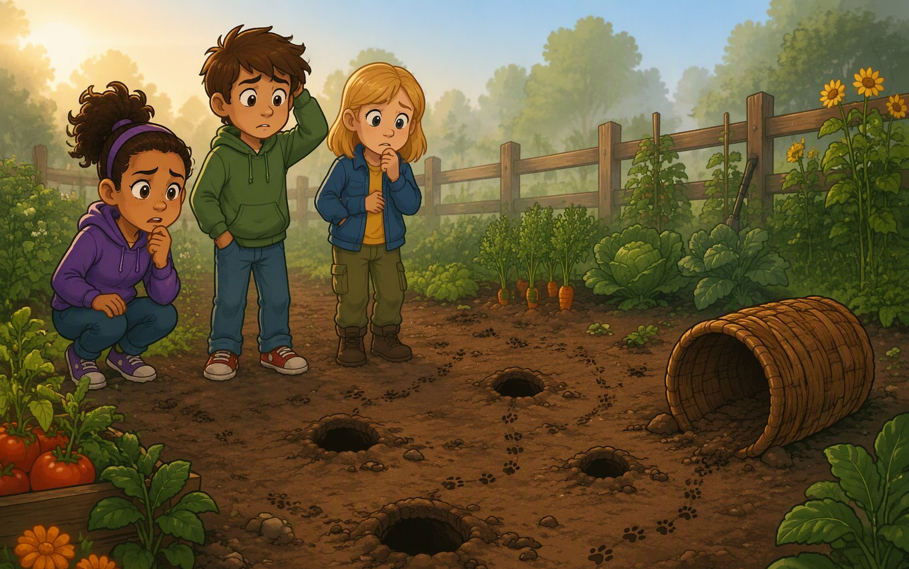
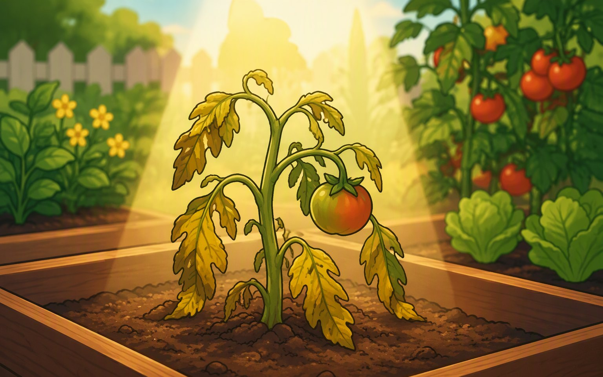
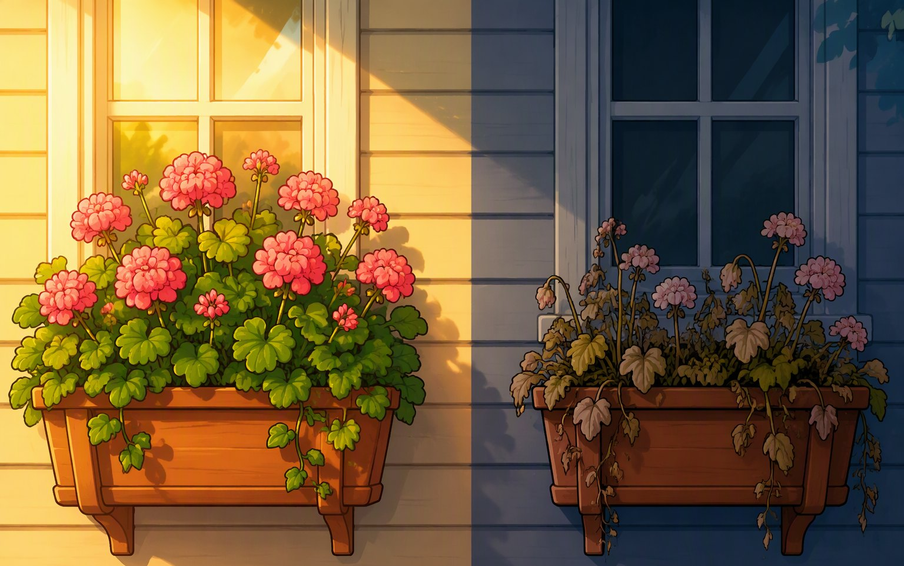
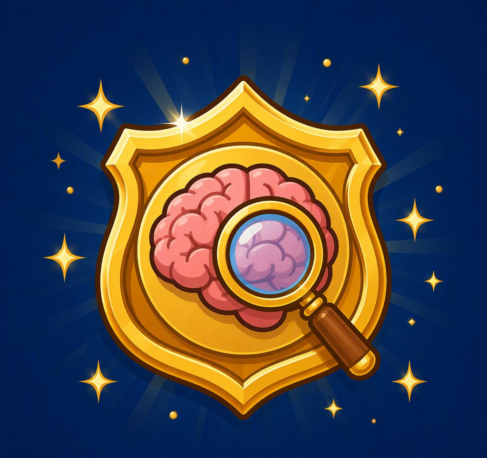
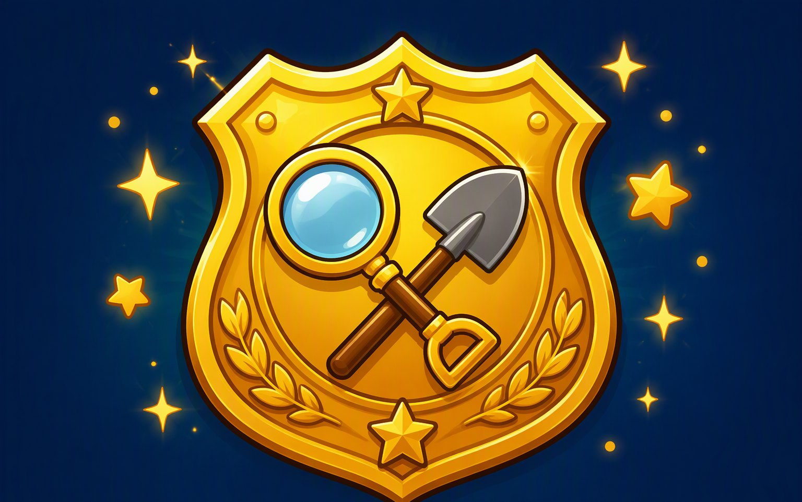
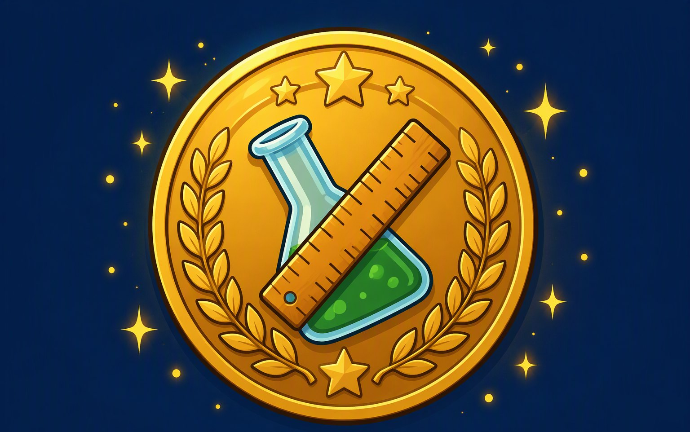
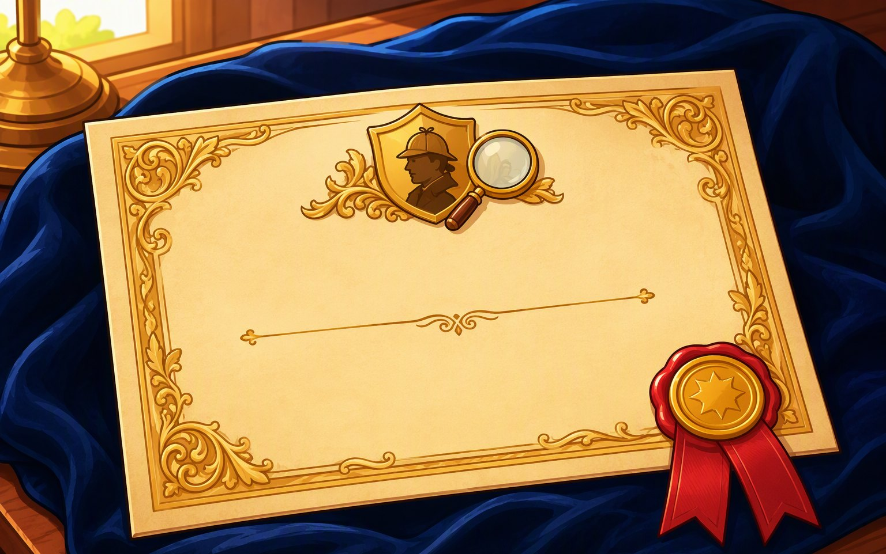

🕵️ JUNIOR DETECTIVE ACADEMY
A self-paced detective adventure that teaches observation, experiments, and evidence-based thinking — the way scientists actually work. No lectures. No worksheets. No "because the textbook says so."
START THE INVESTIGATION
Why this exists
Ask a kid what science is and they'll say "memorizing stuff about planets."
But real science is a way of thinking: asking testable questions, separating what you see from what you assume, designing a fair experiment, and letting evidence — not opinions — settle the argument.
That's exactly what the Junior Detective Academy trains. Through five connected mysteries on one street, your child learns the four thinking rules working scientists use — by needing them to crack each case.
The format
Every case opens with a hook: a noise in the night, footprints on a porch, vanished field mice. Kids investigate because they WANT to know.
No passive video. Kids drag, sort, measure, highlight, predict, and decide. Wrong answers don't say "incorrect" — a senior detective pushes them to think again.
Every case includes a kitchen-table activity: measure real footprints, run a fair plant test. Screen time that ends with them off the screen.
Kids commit to an answer before seeing the outcome. This is the single most powerful habit in scientific thinking — and it's built into every case.
Course map
CASE 1
What questions can science even answer? Sorting testable claims, spotting observations — and your child files their first Case Report.

CASE 2
Observation vs. inference. A witness statement full of traps, a ruler, and a mystery that punishes assumptions.

CASE 3
Four investigation tools — fieldwork, research, models, experiments — and a garden full of neighbors with opinions. Your child judges which plans actually answer the question.

CASE 4
Controlled experiments done right. Your child finds the flaws in three badly-designed tests, then builds a fair one.

CASE 5 · THE FINAL EXAM
No training wheels. Your child chooses the evidence, designs the experiment, and defends their conclusion — then graduates with a printable Case File they built themselves.
The outcome
By graduation, your child can:
Designed using Bloom's Taxonomy: skills build from remembering to analyzing to evaluating to creating, across the five cases. Aligned to Grade 5 science standards: how scientists learn about the natural world, types of investigations, controlled experiments, and learning from observations.
What's included
For teachers
Email [YOUR EMAIL] for classroom licensing.
Questions
Fully secular. Science content only.
Minimal after setup. Cases are self-explanatory. The Parent Guide pages let you check what was covered — and give you questions if you want to discuss.
All screens have optional audio narration. Ideal for ages 9–12; strong readers from 8, and it still lands at 13.
Nothing "fails." Every wrong answer triggers a character who asks a guiding question. Struggling is part of the detective work.
Built in short segments with hands-off activities in every case. Most kids finish a case in one or two sittings.
[Your platform's policy — e.g., TPT/Outschool policy applies.]




Instant access | Works on phone, tablet, computer | Certificate on completion